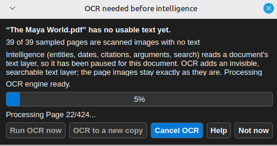
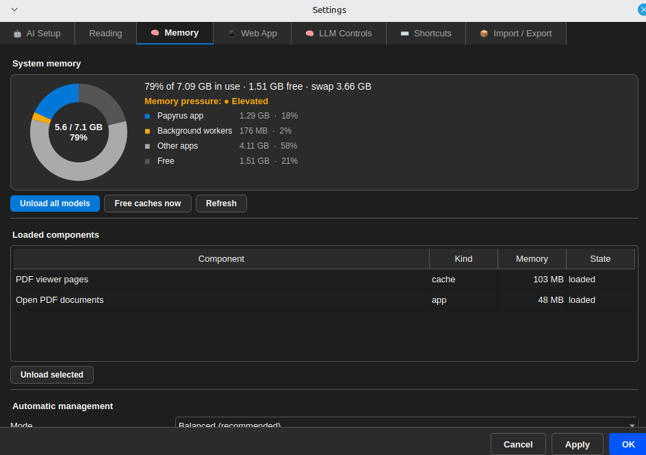
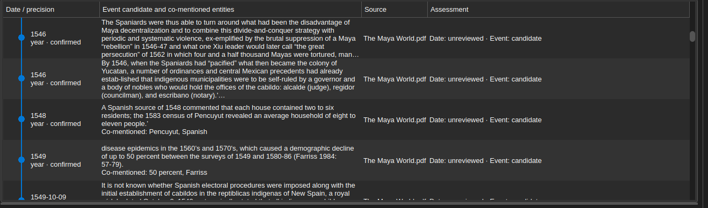
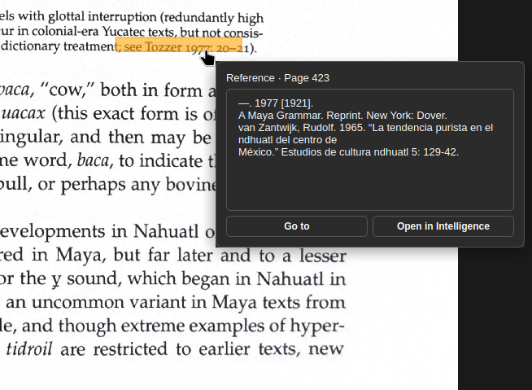
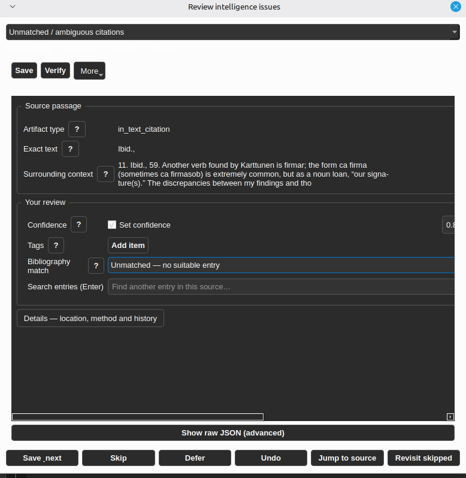
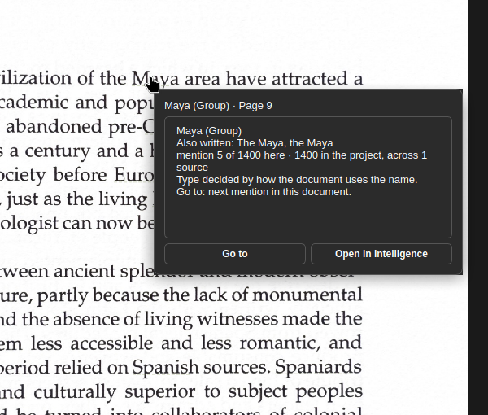
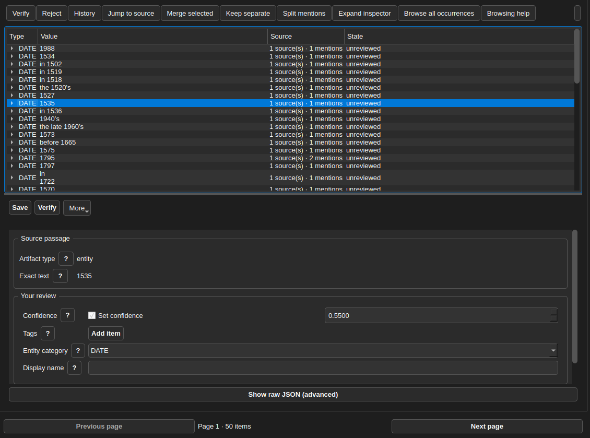
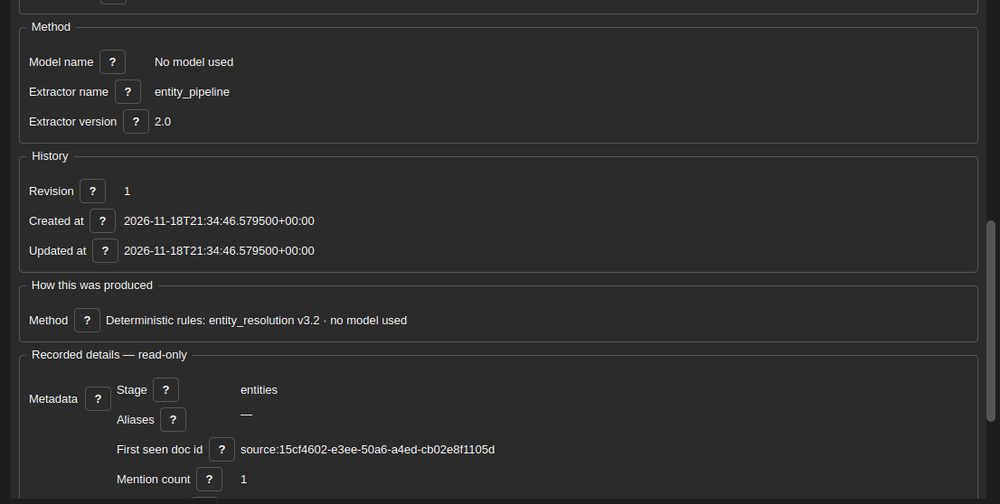
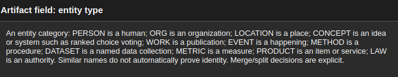

Updates
Notes on what’s new, what’s changed, and what needs more work
1 update · Newest first
Improving Entity Extraction and Source Review
Recent work on Papyrus has focused on recognizing names more reliably across long documents, improving links between passages and references, and making extracted information easier to inspect and correct. Interface improvements and better memory management support this work, while argument analysis and broader testing remain in progress.Full update
Over the past several weeks, much of my work on Papyrus has focused on its extraction system: the tools that identify people, places, organizations, dates, and references in source documents. Alongside this, I have been improving the interface for reviewing those results and addressing memory problems that made larger documents difficult to process.
This work supports a broader goal for Papyrus: helping researchers find and organize information while keeping the original sources and their own judgment central to the process. Extracted information needs to be useful, but it also needs to be possible to check, correct, or reject.
Recognizing names more reliably
One problem became particularly clear when testing a 424-page history book. A name recognizer repeatedly classified “Maya” as a person, even when the passage referred to a group. As more pages were processed, the repeated mistakes reinforced the wrong classification.
The revised system gives more weight to how a name is used throughout the document. Phrases such as “Maya women” help distinguish a group from a person, while words such as “in” or “near” can help identify a place. These patterns are considered as proportions rather than simply accumulated counts, so a longer document does not automatically make a repeated mistake more persuasive. The reasons for a classification are also recorded for review.
In the same test book, coverage of known name occurrences rose from about 70% to 97%, while the proportion linked to the correct entity rose from about 60% to 90%. Names in notes and captions are now included as well. These are results from a particular test document, not an overall accuracy rating for Papyrus.
Language identification has also improved. In a Hawaiian-language newspaper, for example, the system now avoids treating ordinary Hawaiian words as people’s names simply because an English-language model misidentifies them.
Keeping references connected to the text
Extraction work has also extended to footnotes, endnotes, bibliography entries, and references within a document. Papyrus now handles more cases where notes continue across pages or numbering restarts in a new chapter. Hovering over a recognized citation or note marker opens a preview, with controls to visit the referenced material and return to the original passage.
Scanned books present an additional problem: small footnote numbers may be read as punctuation. Papyrus can now re-read those areas of the page image and check a recovered number against the document’s actual notes. In one test chapter, this increased correctly linked markers from 4 of 24 to 19 of 24, with no incorrect links in that sample. There are still missed markers, particularly across the full book.
References such as “see Table 7.2” or “Chapter 16” can also link to their targets. Where a target cannot be established confidently, the reference remains unlinked.
Making results easier to inspect and correct
The interface is being improved alongside the underlying extraction. An optional setting underlines recognized names directly in the PDF. Hovering over a name shows its classification, alternative spellings, mention counts, and the recorded reasons it was recognized. Navigation controls let the researcher move between its occurrences without repeatedly searching the document.
The review interface also now includes inline editing, queues for verifying, skipping, or deferring items, and undo controls for review decisions. Field explanations and processing indicators make it easier to understand the available controls and see what the app is doing.
These changes matter because source links are only useful if checking them is practical. Being able to inspect an item while reading, correct it, and return to the passage makes review a more natural part of the workflow. Further interface work is planned for exploring connections, reviewing proposed links, and navigating document outlines and printed page numbers.
Working across documents and within available memory
Papyrus can now look for names established in other documents within the same project. This is intended to help researchers follow a person, place, or organization across a collection. Possible duplicate entities are presented as suggestions, with reasons, rather than merged automatically. Cross-document linking still needs more manual checking; early results include incorrect matches.
A centralized memory manager has also been added, alongside fixes for specific causes of excessive memory use. One bug stored repeated copies of page-position information for every sentence. Fixing it reduced peak memory use in one test set from roughly 5.2 GB to 0.7 GB. This addresses a practical obstacle to working with longer sources on an ordinary laptop, though larger collections still need further testing.
Measuring progress and choosing tools
To evaluate these changes, I built a testing process that runs the app’s extraction pipeline on real documents and compares the results with manual annotations. The collection includes court opinions, research papers, a scanned history book, and a Hawaiian-language newspaper. Checks also compare results from individual chapters with those from a whole book, helping identify problems that only appear at length.
The measurements are still provisional. Some annotations need further review, and the reserved book chapter has not yet been scored as a blind test. The results help guide development, but they do not establish how well Papyrus will perform on an unfamiliar research collection.
This extraction work does not use generative AI during import. Conventional parsing and rules handle suitable tasks, with optional local models available for narrower jobs such as name recognition and language identification. The newly added resources remain off by default. So far, their measured benefit has been modest overall, even where they help with particular documents.
That approach follows Papyrus’s aim of matching the tool to the task and avoiding unnecessary computation. Local processing keeps research material on the researcher’s computer during these stages, but neither local execution nor repeatable rules guarantee correct results.
What remains to be done
Argument analysis is less developed than name and reference extraction. The current rule-based approach is not yet reliable enough, so I am building a reviewed set of examples for training and evaluating a small local model. This work includes identifying passages that make claims, provide evidence, or qualify an argument, and recording how those passages relate. The first fully reviewed paper has contributed 54 argument units and 40 relationships; substantially more examples across different kinds of writing are needed.
Other priorities include checking cross-document matches, improving the connections explorer, and fixing text-processing problems exposed during annotation. These include broken hyphenation, sentences split by tables, and footnote markers attached to the wrong sentence.
The aim is to make information easier to find and organize without hiding the decisions involved in extracting it. Better recognition helps build a useful research workspace; source links, visible reasons, and reversible review controls let researchers examine what that workspace contains. Papyrus remains an experimental prototype, and this work is part of making those principles practical throughout the app.


















